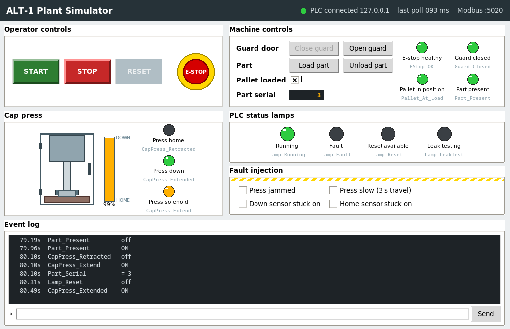
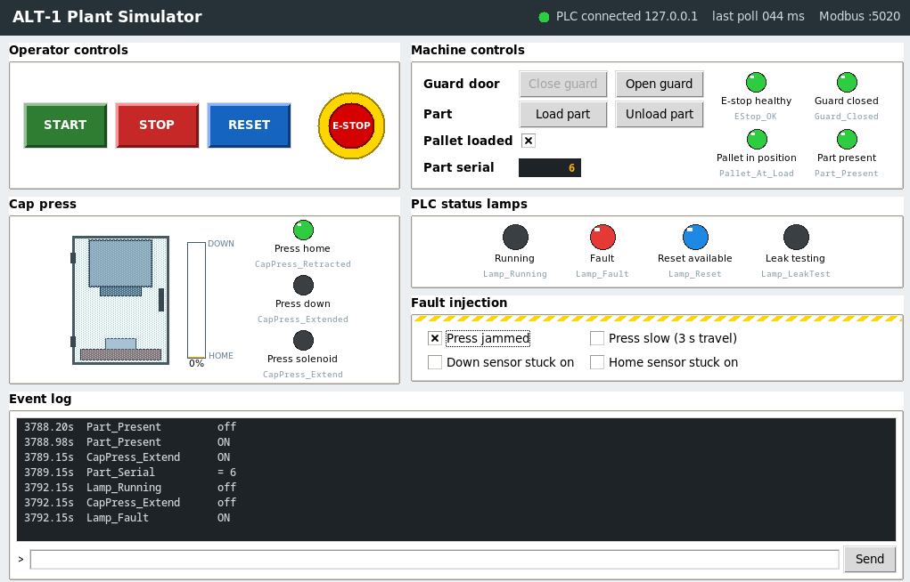

PLC portfolio project
ALT-1 Assembly & Leak Test Machine
A simulated special purpose machine that presses a cap onto a cast valve body and leak tests the assembly. It is controlled by an IEC 61131-3 program running on the OpenPLC soft PLC, and a plant simulator takes the place of the machine.
View source on GitHub Functional description (.pdf)

Overview
The hypothetical product is a small cast aluminium valve body. A cap is pressed onto the body, and the assembly is pressure decay leak tested before it is released.
Stations
- Load and identify The operator loads a part and presses Start. The machine assigns a serial number.
- Cap fit and press A pneumatic cylinder presses the cap on. Position sensors confirm travel, with a timeout fault.
- Leak test The machine runs a test on a leak test instrument and handles pass, fail, timeout and instrument fault.
- Unload Good parts would go to the good lane. Failed parts would go to a locked reject bin.
Control system architecture
- Soft PLC
- OpenPLC runtime v4 in Docker
- Languages
- Ladder (main program), Structured Text (function blocks)
- Scan
- Cyclic task, 20 ms
- Plant link
- Modbus TCP, localhost:5020, 9 inputs, 5 coils, 1 register
Two layers
The ladder layer owns the physical I/O, permissives and interlocks, and is the only layer that drives outputs. The Structured Text sequence only sets request bits. It can ask for the cylinder to extend; the interlock layer decides whether it does.
CapPress_Req_Extend, not to the solenoid; rung 7 turns it into CapPress_Extend only while the machine is running.Machine sequence
| Step | Name | Moves on when |
|---|---|---|
| 0 | Idle | Part loaded and machine running |
| 10 | Press extend | Press extended |
| 20 | Press dwell | 500 ms dwell done |
| 30 | Press retract | Press retracted |
| 40 | Leak test (stub) | 3 s stub timer done |
| 50 | Unload | Part removed |
| 90 | Aborted | Part removed and no fault active |
Plant simulator
plant_sim.py pretends to be the machine. It is a Modbus TCP server
written in standard-library Python, with an operator panel and a terminal command
line. It also injects faults, such as a jammed press, a slow press or a stuck sensor.
python3 sim/plant_sim.py
python3 sim/plant_sim.py --no-gui --port 5020 --travel 0.4Factory acceptance test
The functional description defines 30 tests, FAT-01 to FAT-30, each with an action and an expected result. They were run by hand against the plant simulator, driving the machine from its operator panel and checking how the PLC responded. Faults that would be hard to create on demand, such as a jammed press, a slow press or a stuck position sensor, were created with the simulator's fault injection.

What the tests cover
| Group | Tests | What they prove |
|---|---|---|
| Run control | FAT-01 to 10 | Start seals in; Stop, an open guard or the e-stop stops the machine; the machine doesn't restart until Start is pressed again. |
| Cap press | FAT-11 to 18 | Extend and retract timeouts and sensor conflicts latch a fault; reset is disabled until the press is home; a press not home at power-up is caught. |
| Machine sequence | FAT-19 to 25 | A full cycle runs step by step, each part gets a new serial number, stopping mid-cycle aborts the part. |
| Status outputs | FAT-26 to 30 | The fault, reset and leak test lamps show the true state, and the serial number reaches the panel. |
What testing found
Through testing I discovered that a part could be taken off the pallet during the leak test without
any fault being shown, so an untested part could leave the machine unnoticed. As a fix,
the PLC now drives a leak test lamp, Lamp_LeakTest, during step 40, and the
Unload function is disabled while a leak test is being conducted. FAT-28 checks both.
Extensions
- Simulated leak test instrument protocol and fault cases
- Recipe handling for product variants
- Separate load and press stations with pallet transfer
- Visual inspection and supervisory HMI with OEE reporting
- Automated test harness with chaos simulation